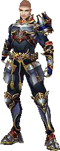
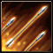
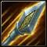
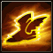
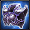

Лучники - осторожные, но невероятно сильные бойцы, которые предпочитают держаться от своих врагов на расстоянии, поражая их либо мощнейшими точечными выстрелами, либо целым ливнем из стрел, не позволяющим укрыться ни одному противнику.
Лучник мужчина

warcher женщинаИгровой класс лучник
Благодаря острому зрению, быстроте реакции и огромной физической силе, лучники могут позволить себе использовать в бою лук, который по размеру почти достигает их собственного роста. Данный тип оружия позволяет им довольно быстро, главное, без травм для себя наносить огромный урон множеству врагов или же мгновенно нейтрализовывать одиночные цели на первых же секундах боя.
Обладая неплохой защитой, лучники способны некоторое время выдерживать атаки врагов, но большая группа всё-таки может стать для них настоящим испытанием. Впрочем, научившись усиливать свое оружие, придавая тому колоссальную силу, они с готовностью контратакуют, стараясь погубить противников до того, как те нанесут слишком большой урон.
Увеличивает урон, который лучник наносит противнику. (Вы получите +3 за каждый уровень)
Стойкость
Увеличивает количество жизней лучника. (Вы получите +1 за каждый уровень)
Харизма
Увеличивает количество воинов, которых можно взять с собой в бой. (Вы получите +10 за каждый уровень)
Базовая защита
Уменьшает физический урон, наносимый лучнику противником. (Вы получите +1 за каждый уровень)
Особенности
Оружие лучников - огромный лук, поэтому они наносят урон, находясь на расстоянии от противника. Идеальное место для них - фланги, а лучшие союзники - воины с большой физической защитой.

Дальний бой
Соединяя свою физическую силу с мощью длинных луков, лучники становятся наиболее сильными боями. Их физическая атака превосходит все другие характеристики, и ни один боец не может ей противостоять.

Мощная атака
Благодаря собранности и отличной реакции, лучники обладают феноменальной скоростью, которая позволяет им в бою всегда атаковать первыми.

Скорость
Экипировка
В качестве оружия лучники используют лук, т.е. наносят урон с помощью физической, а не магической силы.
Начиная с 20-го уровня лучникам становится доступны сеты:
Критический удар
Повышает шанс нанести удвоенный урон по противнику.
Физическая атака
Увеличивает урон, который лучник наносит противнику.
Физическая защита
Уменьшает физический урон, наносимый лучнику.
Характеристики вооружения лучниковНепоколебимая вера (20 ур.)

Даёт +20 к урону.
Позволяет за удар получать дополнительно 5 очков ярости.
Лучник (40 ур.)
Даёт +200 к урону.
Дает дополнительно 5 ярости за каждый удар.
Сеты подземелий:Аренный свет
Позволяет игнорировать 1000 физической защиты противника.